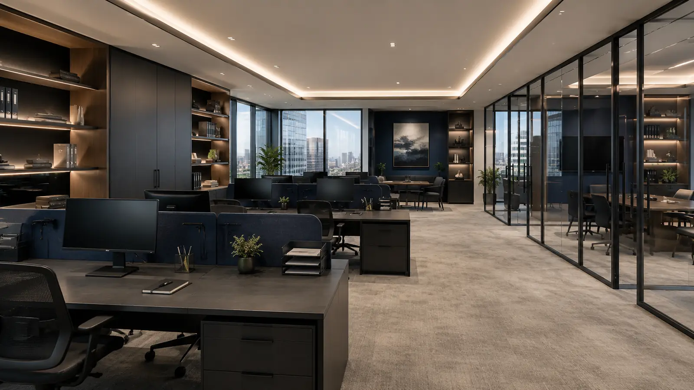
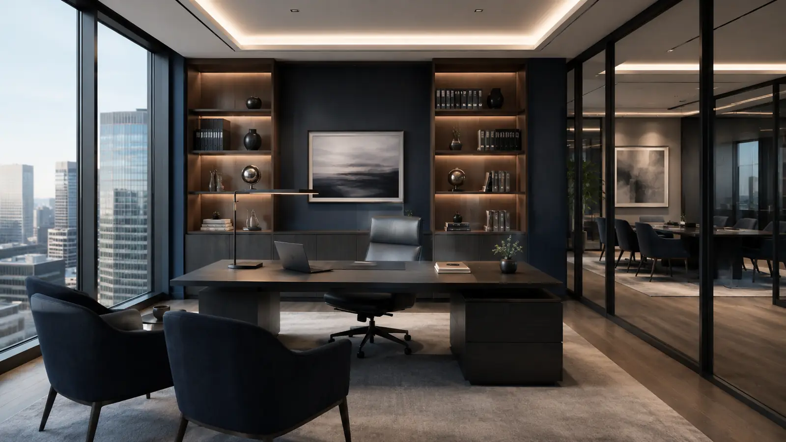

Ordre des experts-comptables
Nos associés sont inscrits au tableau de l’Ordre et exercent selon ses normes professionnelles et son code de déontologie.
S2A accompagne les dirigeants et organisations des Alpes-Maritimes et des Alpes-de-Haute-Provence depuis plus de vingt-cinq ans, avec la double exigence de la rigueur professionnelle et de la proximité humaine.


Depuis 1998, le cabinet s’est développé autour d’une conviction simple : la technique comptable ne prend son sens que lorsqu’elle éclaire réellement les décisions du dirigeant.
Pas de service ni de pôle : chaque collaborateur est responsable de ses dossiers, de la comptabilité au conseil.
Votre collaborateur suit votre dossier de A à Z et vous répond directement.
Aucun circuit entre services : celui qui vous répond connaît déjà votre dossier.
Comptabilité, social, fiscal, juridique, financement : un référent, plusieurs expertises.
Vos chiffres, votre paie, votre fiscalité et vos projets sont lus ensemble.
Expert-comptable et commissaire aux comptes : nos missions s’exercent dans un cadre légal et déontologique strict, au bénéfice de votre entreprise.
Nos associés sont inscrits au tableau de l’Ordre et exercent selon ses normes professionnelles et son code de déontologie.
Des missions de certification des comptes conduites avec indépendance, dans le respect des règles de la profession.
Les informations que vous nous confiez sont couvertes par le secret professionnel, au sein de l’équipe comme vis-à-vis des tiers.
Notre responsabilité civile professionnelle est couverte, conformément aux obligations de la profession.

Expert-comptable · Commissaire aux comptes
Fondateur du cabinet, inscrit à l’Ordre des experts-comptables depuis 1998.
Expert-comptable · Commissaire aux comptes
Associé du cabinet, il accompagne les dirigeants sur leurs sujets comptables et financiers.Comptabilité · Social · Juridique · Audit · Conseil
Des collaborateurs formés en continu, chacun responsable de ses dossiers de A à Z.Collaborateurs confirmés, stagiaires ou alternants : nous étudions toute candidature motivée, à Nice comme à Allos.
Création, changement de cabinet, développement, difficultés ou transmission : expliquez-nous votre situation.